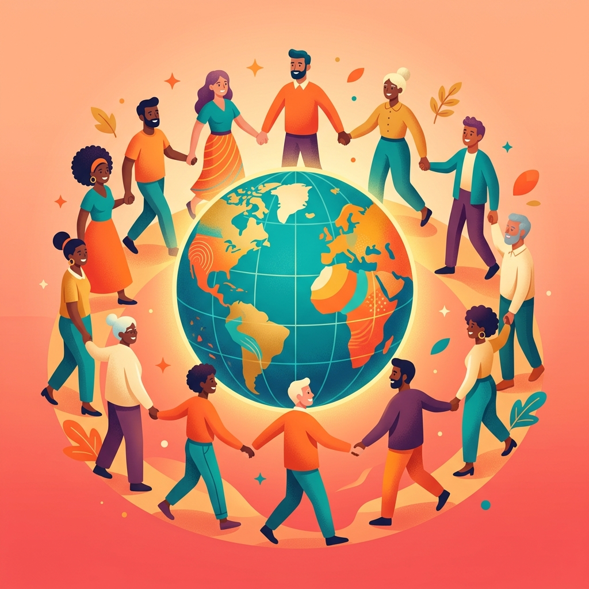
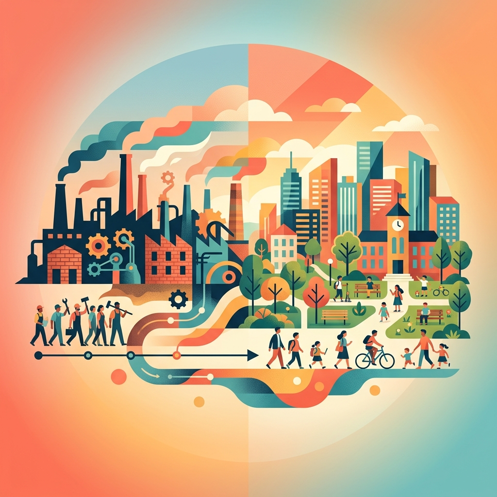
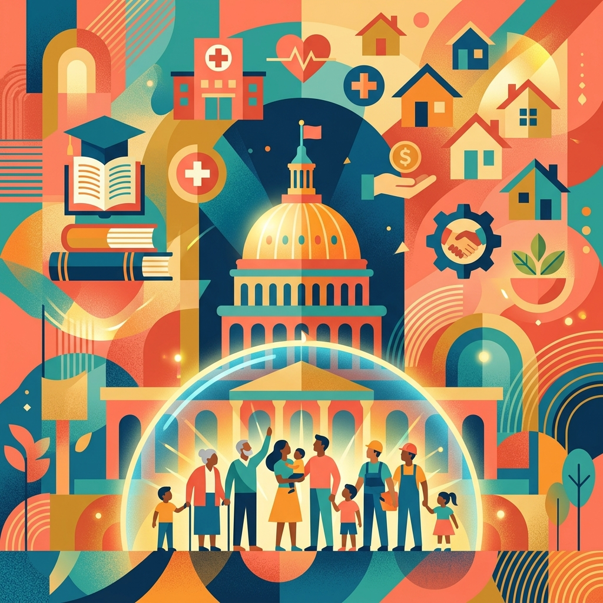
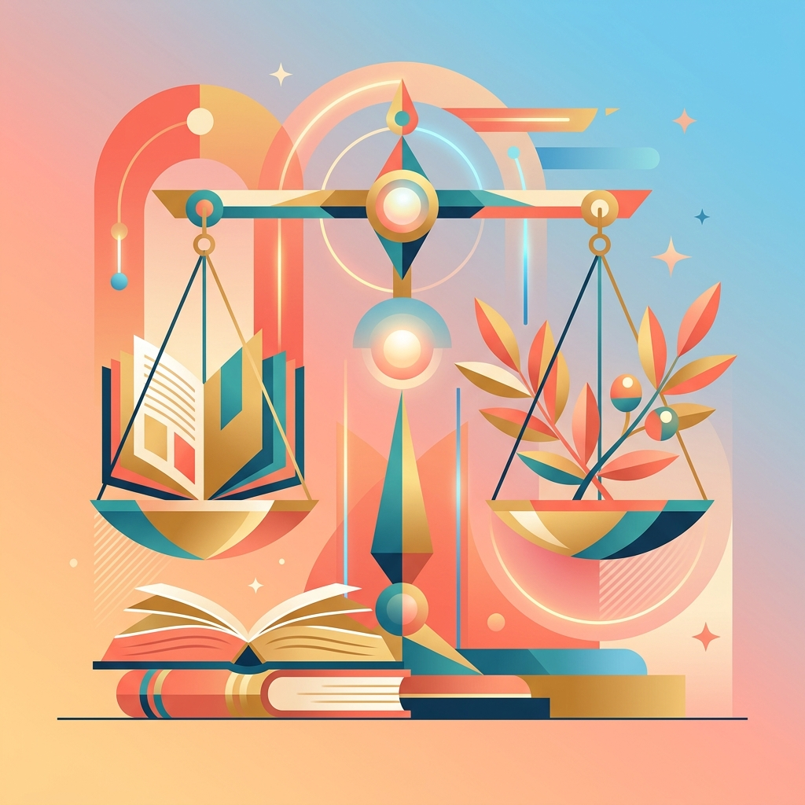
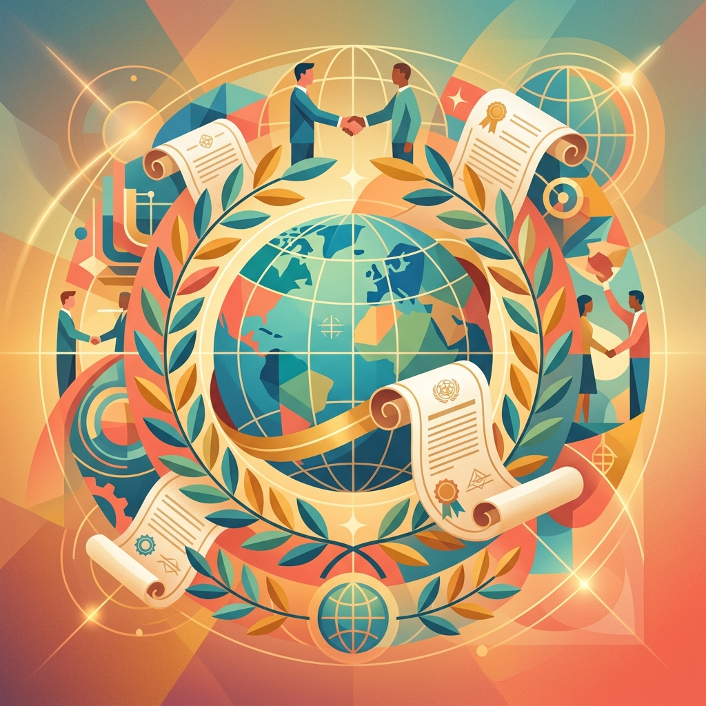

Igualdad, Estado de Bienestar y Condiciones de Vida Dignas
Son derechos económicos, sociales y culturales. Su objetivo principal es garantizar la igualdad y condiciones de vida dignas para todos.
Están fundamentados en garantizar el acceso a bienes, servicios y oportunidades sociales fundamentales.
A diferencia de la visión puramente individualista, su fin último es procurar la mejor condición de vida posible para las personas.

Emergieron con fuerza tras las profundas desigualdades provocadas por la industrialización.
La Constitución mexicana de 1917 y la Constitución de Weimar (1919) marcaron los primeros reconocimientos.
Surgen como resultado directo de la II Guerra Mundial y la victoria de la coalición antifascista.
Se ligan al desarrollo del estado de bienestar y las constituciones antifascistas de Francia, Italia y Alemania.
La primera generación exigía que el Estado "no interviniera" en las libertades individuales.
Imponen al gobierno el deber de respetar, promover y aplicar activamente estos derechos.
Solo la acción positiva de un gobierno democrático, a través del estado de bienestar, puede garantizar su ejercicio real.

Históricamente conocidos así, su aplicación exige que los Estados actúen de manera progresiva y dependiendo directamente de la disponibilidad de recursos públicos.
El Estado debe avanzar continuamente hacia su cumplimiento total, prohibiéndose los retrocesos injustificados.
En 1944, el presidente Roosevelt propuso crear una segunda Bill of Rights (Carta de Derechos), evidenciando la importancia de estas garantías estatales.— Franklin D. Roosevelt, 1944

La defensa de los derechos de segunda generación constituye la base del republicanismo moderno como teoría política.
El compromiso con las libertades políticas y civiles exige preocuparse por las condiciones de vida que permiten disfrutarlas.
La libertad de elegir carece de sentido si la persona se encuentra en una situación de miseria donde su elección no tiene impacto real.
El mercado por sí solo concentra la riqueza, polariza la sociedad y acaba degradando los derechos civiles.

Diversos derechos de segunda generación ya estaban esbozados en los artículos 22 al 27.
Desarrollados a profundidad en el Pacto Internacional de Derechos Económicos, Sociales y Culturales. Entró en vigor en 1976.
Naciones Unidas adoptó el Protocolo que busca establecer un órgano de seguimiento y defensa similar al Consejo de DDHH.
Los DESC garantizan la base material para que el ejercicio de las libertades fundamentales sea real y en igualdad de condiciones.
La falta de derechos de segunda generación provoca la violación sistemática de los derechos civiles y políticos de primera generación.
Garantizar la libertad política requiere, ineludiblemente, garantizar las condiciones materiales para ejercerla.
Quedamos a su disposición para cualquier duda, pregunta o comentario.
También puedes usar las flechas laterales, los indicadores inferiores
o deslizar en pantalla táctil